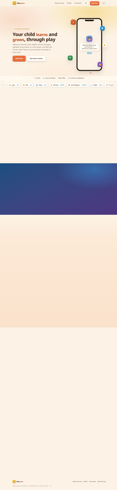
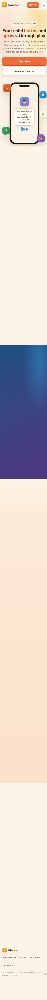

landing.html აუდიტი28 ბლოკი (6 feature ბარათი, age picker, ტელეფონის mockup, curriculum, FAQ) .reveal კლასით იწყება opacity:0-ით და ჩანს მხოლოდ scroll-ზე (JS IntersectionObserver ამატებს .in-ს → .reveal.in{opacity:1}).
რატომ: opacity:0 default JS-ზეა დამოკიდებული, no-JS fallback არ აქვს (მხოლოდ prefers-reduced-motion ხსნის). ანუ ლენდინგის უდიდესი ნაწილი უხილავია სწორედ იქ, სადაც პირველი შთაბეჭდილება იქმნება.
გასწორების მიმართულება (Geo-სთვის): .reveal{opacity:0} → html.js .reveal{opacity:0}, და <html>-ს დაამატე js კლასი JS-ის დასაწყისში. default = ხილული, reveal = მხოლოდ JS/scroll გამოცდილებაში (progressive enhancement).
| # | severity | აღმოჩენა |
|---|---|---|
| B1 | 🟡 P2 | favicon 404 FACT — console-ში ყოველ ჩატვირთვაზე 1 error (favicon.ico არ არსებობს). 1-ხაზიანი fix. |
| B2 | 🟡 P2 | meta-ენა ↔ კონტენტის ენა არ ემთხვევა FACT — meta description ქართულია, en-ბრაუზერზე კი გვერდი ინგლისურად ირენდერება + <html lang> ka→en იცვლება. SEO/share-ში არეული სიგნალი. |
| B3 | 🟢 P3 | i18n გაჟონვა EN რეჟიმში FACT — UI სტრინგები ინგლისურ რეჟიმშიც ქართულად რჩება: „კონტროლი", თემების სახელები (მზიანი/ოკეანე/ტყე/მაყვალი). (alphabet მაგალითები — ვაშლი/კატა/მზე — ქართულად სწორია, ის კონტენტია.) |
| B4 | 🟢 P3 | copy review INFERENCE — EN სტრინგი „Built to follow the national curriculum… Kings programme" placeholder/მთარგმნელს ჰგავს. ადამიანის copy-review. |
კარგი ამბავი FACT: 0 JS error, ყველა asset 200, ყველა CTA ერთ სუფთა მისამართზე (index.html?app=1), GA page_view ფიქსირდება.
<img>) — მკვეთრი ნებისმიერ ეკრანზე, მსუბუქი, alt-debt 0.oklch 0.64 კრემზე) — წვრილ ფონტზე WCAG AA-ს ქვემოთ შეიძლება იყოს; გადასამოწმებელი.landing.css 64KB ცოტა მძიმე, მაგრამ ok.🟡 FACT არ აქვს Open Graph tags, Twitter card, favicon. ანუ FB/WhatsApp/LinkedIn share-ზე preview ცარიელი/ულამაზო — #1-თან (blank-below-hero) ერთად share-ის გამოცდილებას კლავს. og:image + 1 favicon = დიდი მოგება მცირე ხარჯში.
ამ არქიტექტურაში front-end-ის დაცვა შეუძლებელია და ეს ნორმალურია FACT. Public GitHub Pages — მთელი HTML/CSS/JS 1 წამში ჩამოიწერა. Anti-copy ხრიკები trivially-bypass-დება და UX/perf-ს აფუჭებს — შენს გვერდს ასეთი არაფერი აქვს, სწორი არჩევანია, ნუ დაამატებ. რეალური IP = AI-ტუტორის backend/curriculum/მონაცემები (server-ზე), არა front-end. კოპირებისგან რეალური დაცვა იურიდიულია (© footer-ში გაქვს ✅), არა ტექნიკური.


ფიქსების შესრულება Viktor-ის lane არ არის — ეს spec Geo-ს (site-dev) გადაეცემა, ან owner უშვებს.